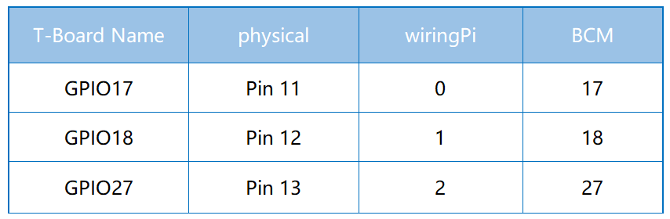
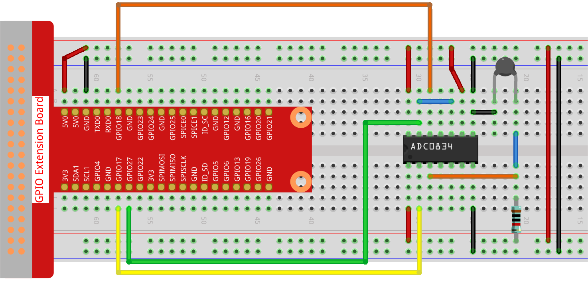

Note
Bonjour et bienvenue dans la communauté des passionnés de Raspberry Pi, Arduino et ESP32 de SunFounder sur Facebook ! Plongez plus profondément dans l’univers du Raspberry Pi, d’Arduino et de l’ESP32 avec d’autres passionnés.
Pourquoi nous rejoindre ?
Support d’experts : Résolvez vos problèmes après-vente et relevez les défis techniques grâce à l’aide de notre communauté et de notre équipe.
Apprendre & Partager : Échangez des conseils et des tutoriels pour enrichir vos compétences.
Aperçus exclusifs : Soyez les premiers informés des nouvelles annonces de produits.
Réductions spéciales : Profitez de remises exclusives sur nos derniers produits.
Promotions festives et concours : Participez à des concours et bénéficiez d’offres spéciales lors d’événements festifs.
üëâ Pr√™t √† explorer et cr√©er avec nous ? Cliquez sur [Ici] et rejoignez-nous d√®s aujourd‚Äôhui !
2.2.2 Thermistance
Introduction
Tout comme une photorésistance peut détecter la lumière, une thermistance est un dispositif électronique sensible à la température. Elle peut être utilisée pour réaliser des fonctions de contrôle de la température, comme la création d’une alarme thermique.
Composants nécessaires
Pour ce projet, nous aurons besoin des composants suivants :

Schéma de circuit

Procédure expérimentale
Étape 1 : Construisez le circuit.
Étape 2 : Accédez au dossier du code.
cd ~/davinci-kit-for-raspberry-pi/python-pi5
Étape 3 : Exécutez le fichier.
sudo python3 2.2.2_Thermistor.py
Une fois le code lancé, la thermistance détectera la température ambiante, qui sera affichée à l’écran après le calcul effectué par le programme.
Avertissement
Si une erreur RuntimeError: Cannot determine SOC peripheral base address apparaît, veuillez consulter Si gpiozero ne fonctionne pas..
Code
Note
Vous pouvez modifier/réinitialiser/copier/exécuter/arrêter le code ci-dessous. Mais avant cela, assurez-vous de vous rendre dans le chemin source du code, comme davinci-kit-for-raspberry-pi/python-pi5. Après avoir modifié le code, vous pouvez l’exécuter directement pour voir l’effet.
#!/usr/bin/env python3
# -*- coding: utf-8 -*-
import ADC0834
import time
import math
# Initialisation du module ADC0834
ADC0834.setup()
# Exécution du processus dans un bloc try-except
try:
while True:
# Lecture de la valeur analogique du capteur
analogVal = ADC0834.getResult()
# Conversion de la valeur analogique en tension
Vr = 5 * float(analogVal) / 255
# Calcul de la résistance de la thermistance
Rt = 10000 * Vr / (5 - Vr)
# Calcul de la température en Kelvin
temp = 1 / (((math.log(Rt / 10000)) / 3950) + (1 / (273,15 + 25)))
# Conversion de Kelvin en Celsius
Cel = temp - 273,15
# Conversion de Celsius en Fahrenheit
Fah = Cel * 1,8 + 32
# Affichage de la température en Celsius et en Fahrenheit
print('Celsius: %.2f C Fahrenheit: %.2f F' % (Cel, Fah))
# Attente de 0,2 seconde avant la prochaine lecture
time.sleep(0.2)
# Gestion de l'interruption clavier pour une terminaison propre
except KeyboardInterrupt:
# Libération des ressources de l'ADC0834
ADC0834.destroy()
Explication du code
Cette section importe la bibliothèque ADC0834 pour la conversion analogique-numérique, la bibliothèque
timepour implémenter des délais, et la bibliothèquemathpour effectuer des opérations mathématiques.#!/usr/bin/env python3 # -*- coding: utf-8 -*- import ADC0834 import time import math
Initialisation du module ADC0834 pour permettre la lecture des valeurs analogiques.
# Initialisation du module ADC0834 ADC0834.setup()
Implémentation d’une boucle infinie pour la lecture continue des données. La boucle lit la valeur analogique de la thermistance, la convertit en tension, calcule la résistance de la thermistance, puis la traduit en mesures de température en Kelvin, Celsius et Fahrenheit. Elle affiche ensuite les températures en Celsius et en Fahrenheit avec une pause de 0,2 seconde entre chaque lecture.
# Exécution du processus dans un bloc try-except try: while True: # Lecture de la valeur analogique du capteur analogVal = ADC0834.getResult() # Conversion de la valeur analogique en tension Vr = 5 * float(analogVal) / 255 # Calcul de la résistance de la thermistance Rt = 10000 * Vr / (5 - Vr) # Calcul de la température en Kelvin temp = 1 / (((math.log(Rt / 10000)) / 3950) + (1 / (273,15 + 25))) # Conversion de Kelvin en Celsius Cel = temp - 273,15 # Conversion de Celsius en Fahrenheit Fah = Cel * 1,8 + 32 # Affichage de la température en Celsius et en Fahrenheit print('Celsius: %.2f C Fahrenheit: %.2f F' % (Cel, Fah)) # Attente de 0,2 seconde avant la prochaine lecture time.sleep(0.2)
Capture de l’exception
KeyboardInterruptpour terminer proprement le programme et libérer les ressources du module ADC0834.# Gestion de l'interruption clavier pour une terminaison propre except KeyboardInterrupt: # Libération des ressources de l'ADC0834 ADC0834.destroy()